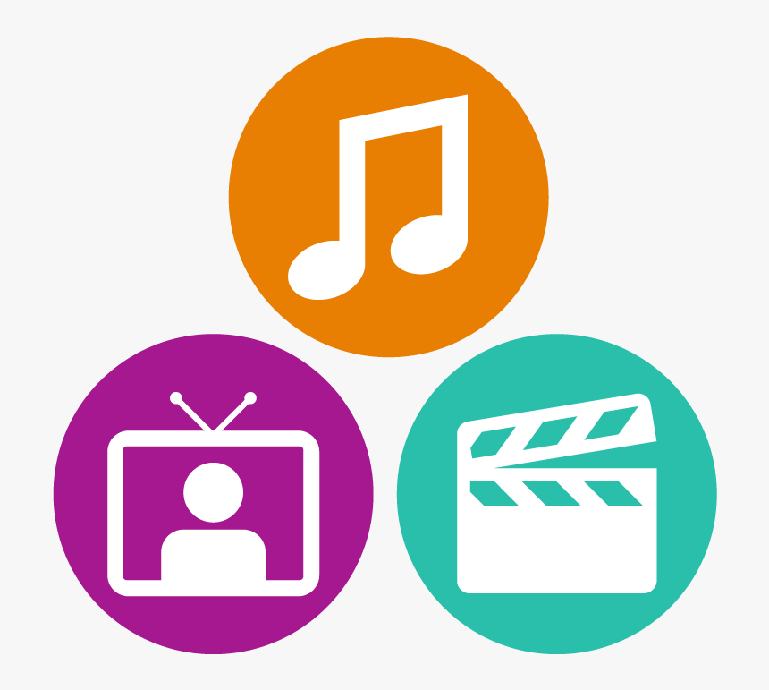

A variety page of media I've seen and reviewed
I've known this artist all the way back in 2014, but didn't really browse their discography until I had the chance to see him live at a music festival in 2022. I started to listen to this album in preperation for his upcoming performance at Electric Forest and I was blown away. The blend between pop and electronic is something that wouldn't normally sound good to me, but he maintains a unique and fresh spin throughout the entire album. It has a sort of nostalgic quality to it that made seeing it performed live even more elevated for me. My favorite tracks on the album are "Mirror", "Musician", and "Look at the Sky".
HBO has put out some amazing content over the years, but "The Wire" still stands as my absolute favorite. 5 seasons of consistent and gripping television that I couldn't stop watching when I first picked it up. Premiering back in 2002, it follows the massive drug problem in Baltimore at the time and views it from the perspective of the users, dealers, law enforcement, and politicians. The contrast between each group keeps the show fresh and lets the viewer see how events start to unfold for everyone, as most of those events have a domino effect that each group has to deal with. The acting, writing, and plot are all a master class of what television can be.
Not everything I watch or listen to is going to be good, and this is no exception. A film based off the popular video game franchise was an easy enough recipe to follow, but this is one of the worst adaptations I have ever seen. It has been a while since I've seen a director completely miss the feel and direction of the source material to this degree. The casting choices are so absurd, with a majority of characters being way older than they are in the games, the dialogue is groan-inducing, and the CGI is dated even for 2024. For a budget of $120 million, you can tell a lot of it went into hiring big stars such as "Kevin Hart", "Jamie Lee Curtis", and "Jack Black". Although not boring, it doesn't appeal to the fans of the series and tries too many different things that have no correlation to the franchise fans have come to love over the years.